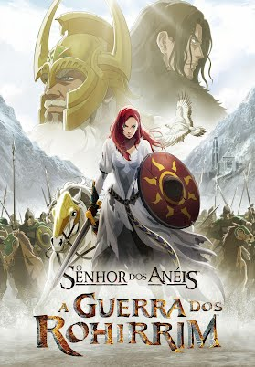
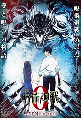

Venha se divertir e distrair com as animações jâponesas diferenciadas

O Senhor dos Anéis: A Guerra de Rohirrim acompanha a história não contada por trás do famoso Abismo de Helm, a fortaleza icônica que ajudou na jornada de Aragon, Legolas e Gimli centenas de anos antes da fatídica Guerra dos Rohirrim, contando a vida e os tempos sangrentos de seu fundador, Helm Hammerhand, o rei histórico de Rohan. 183 anos antes das aventuras de Frodo e dos eventos da trilogia original de filmes, O Senhor dos Anéis: A Guerra de Rohirrim acompanha o destino do povo do reino de Rohan e a saga de seu rei Helm, ambos em guerra com Wulf, lorde do povo Dunlending que busca vingança pela morte de seu pai. Será Hera, filha de Helm, porém, quem irá liderar a resistência contra os ataques desse implacável inimigo antes que seja tarde demais.
Duração: 2 horas e 14min
Classificação indicativa: 14 anos

Yuuta Okkotsu está assombrada. Desde que sua amiga de infância Rika morreu em um acidente de trânsito, seu fantasma ficou preso com ele. Mas seu espírito não aparece como a doce menina que Yuuta conheceu. Em vez disso, ela se manifesta como uma entidade monstruosa e poderosa que o protege ferozmente. Incapaz de controlar o comportamento violento de Rika, Yuuta é incapaz de impedir o derramamento de sangue que se segue à sua vingança brutal. Como resultado, quando apreendido por feiticeiros "Jujutsu" - os guardiões secretos do mundo, treinados para combater forças como Rika - Yuuta deseja ficar completamente isolado para que ninguém mais possa se machucar. No entanto, seu apreensor, o mestre feiticeiro Satoru Gojou, tem planos diferentes para ele: ele entrará na Escola de Ensino Médio Jujutsu e aprenderá a controlar Rika para ajudar as pessoas. Agora no primeiro ano da escola, Yuuta começa a aprender as artes do Jujutsu e a combater seres malignos. Ao lado de seus novos colegas de classe Maki Zenin, um especialista em armas de Jujutsu; Toge Inumaki, um feiticeiro que usa suas palavras como armas; e Panda, um urso panda aparentemente ambulante e falante, Yuuta começa a encontrar seu lugar no mundo e, pela primeira vez, a se sentir confortável com suas habilidades. No entanto, conforme seu treinamento progride, Yuuta aprende que os perigos do mundo do Jujutsu vão muito além dos espíritos malignos.
Duração: 1 hora e 44min
Classificação indicativa: 14 anos